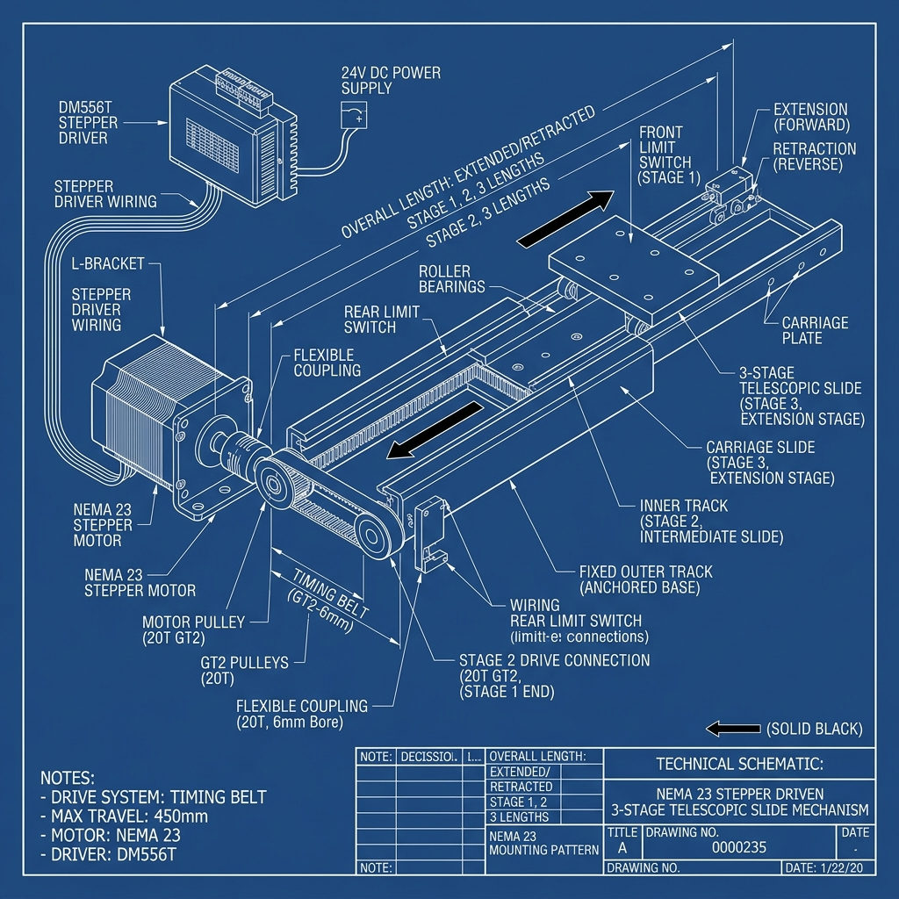
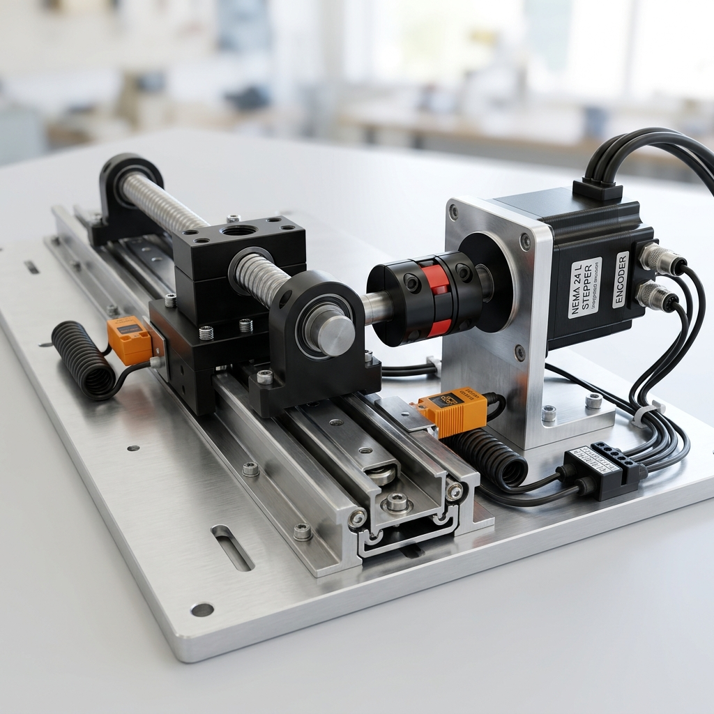

This guide explains how to operate, configure, and manage a telescopic slide mechanism using a stepper motor. It details low-level hardware control, comparison of drive types, microcontroller logic, and compares it to how Tusk Robots manages its telescoping tynes.
To operate a stepper motor on an AMR, you need three core components in the electronic control stack:
[ Microcontroller / PLC ] ──► [ Stepper Driver ] ──► [ Stepper Motor ] ──► [ Telescopic Slide ]
(Teensy / STM32 / CAN) (DM556 / CL57T) (NEMA 23/24)
1. Pulse & Direction (PUL / DIR):
2. Fieldbus Control (CANopen / Modbus RTU):
The stepper motor is mounted at the rear of the slide and rotates a driving pulley, which pulls a loop of heavy-duty timing belt (e.g., GT2 6mm or 9mm width) attached to the moving stages.

The stepper motor is coupled directly to a precision ball screw (e.g., SFU1605) using a flexible jaw coupling. As the screw rotates, the ball nut drives the intermediate stage.

Below is the control logic for homing, extending, and detecting obstructions using a pulse-generator microcontroller:
// Pin Definitions
const int pulPin = 3;
const int dirPin = 4;
const int enPin = 5;
const int limitHome = 6; // Retracted limit switch
const int limitExtended = 7; // Fully extended limit switch
const int driverFault = 8; // Fault signal from Closed-Loop driver
void setup() {
pinMode(pulPin, OUTPUT);
pinMode(dirPin, OUTPUT);
pinMode(enPin, OUTPUT);
pinMode(limitHome, INPUT_PULLUP);
pinMode(limitExtended, INPUT_PULLUP);
pinMode(driverFault, INPUT);
digitalWrite(enPin, HIGH); // Enable motor coils
homeForks();
}
void homeForks() {
// Step backward slowly until home limit switch is triggered
digitalWrite(dirPin, LOW);
while (digitalRead(limitHome) == HIGH) {
digitalWrite(pulPin, HIGH);
delayMicroseconds(1000); // Homing speed
digitalWrite(pulPin, LOW);
delayMicroseconds(1000);
}
// Reset step counter
currentPositionSteps = 0;
}
void extendForks(long targetSteps) {
digitalWrite(dirPin, HIGH); // Extend direction
for (long i = 0; i < targetSteps; i++) {
// Check for safety limit switch or driver fault
if (digitalRead(limitExtended) == LOW || digitalRead(driverFault) == HIGH) {
stopMotor();
break;
}
// Pulse output (implementing simple ramp profile for acceleration)
int pulseDelay = calculateRampDelay(i, targetSteps);
digitalWrite(pulPin, HIGH);
delayMicroseconds(pulseDelay);
digitalWrite(pulPin, LOW);
delayMicroseconds(pulseDelay);
}
}
In official commercial Tusk AMRs (such as the E10T telescopic fork model), the telescoping mechanism is managed via a robust industrial architecture:
1. Integrated Geared Servos (Instead of Open-Loop Steppers):
Tusk uses high-efficiency brushless DC geared servo motors or closed-loop hybrid step-servos operating on a 24V or 48V DC bus. They are geared down (typically 1:10 or 1:15) to multiply torque for handling heavy pallets.
2. CANopen Network Interface:
The motor drives communicate with the low-level micro-ROS node (running on an STM32 MCU) via a CANopen fieldbus loop. This allows the robot to send precise velocity and position commands and read motor temperature, current, and encoder counts in real-time.
3. Dual Fork Synchronization:
The Tusk E10T uses a single motor linked to a transverse splined shaft that drives the left and right telescopic slides together. This mechanical lock ensures the forks extend in perfect synchronization, preventing binding.
4. Current-Limit Obstruction Detection:
The STM32 low-level safety controller constantly monitors the current consumption of the fork drive motor. If the current spikes above a safety threshold (indicating that the forks have collided with a pallet beam or obstruction), the MCU immediately commands a halt, cuts driver power, and triggers a ROS E-stop alert.
5. Inductive Limit Proximity Sensors:
PNP-type inductive proximity sensors are mounted at the retracted (home) and fully-extended limits inside the fork casing. They act as hard-stop electrical interlocks to prevent mechanical crash damage.